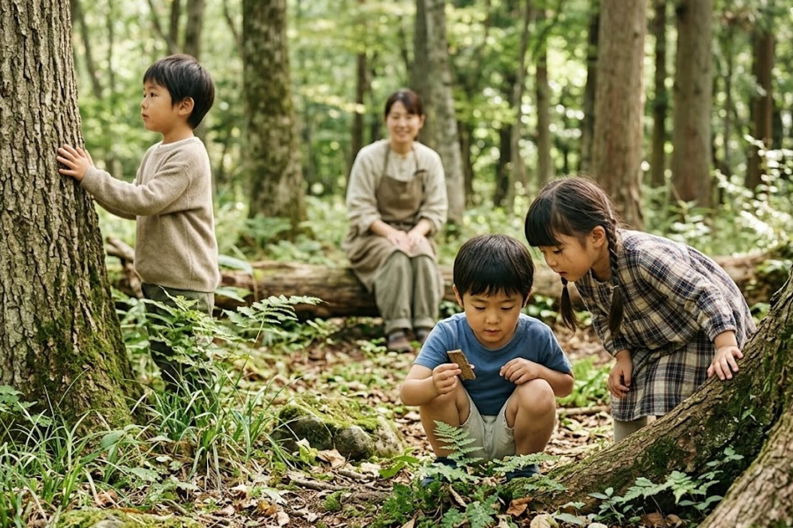
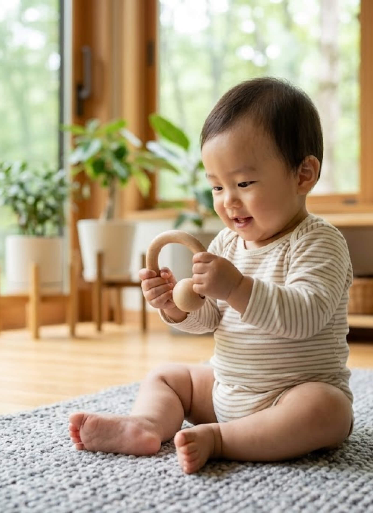
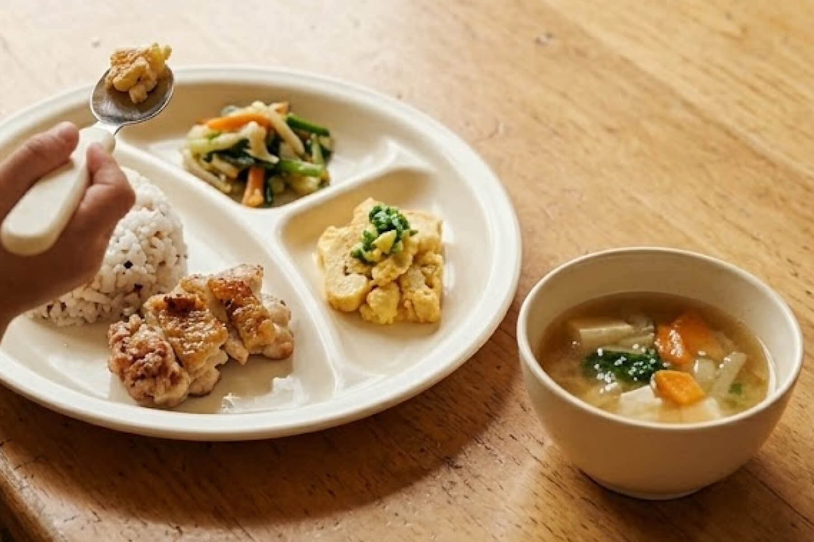
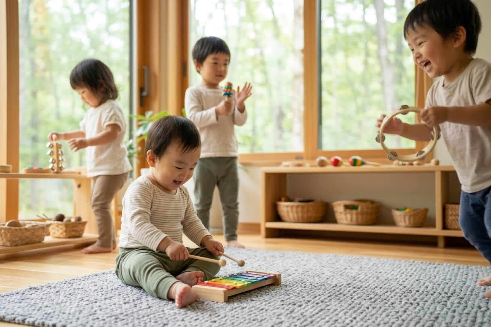
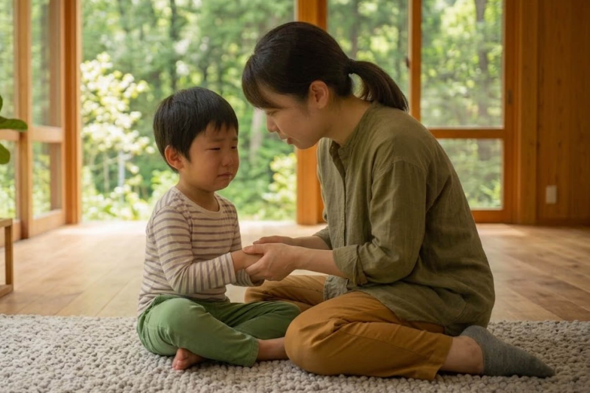
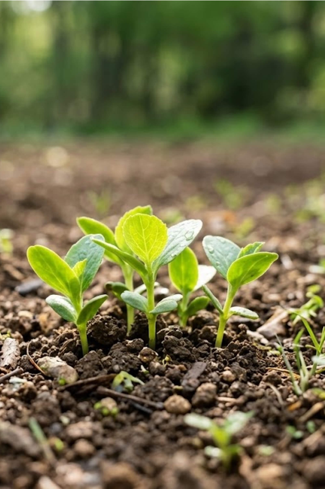
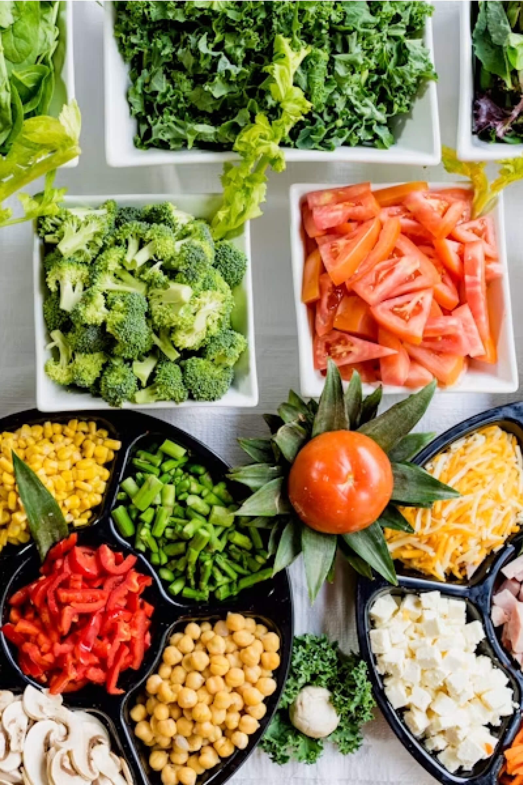
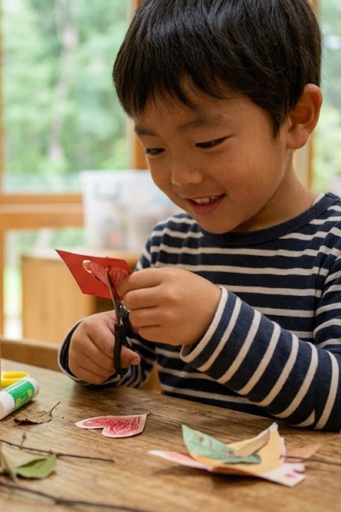
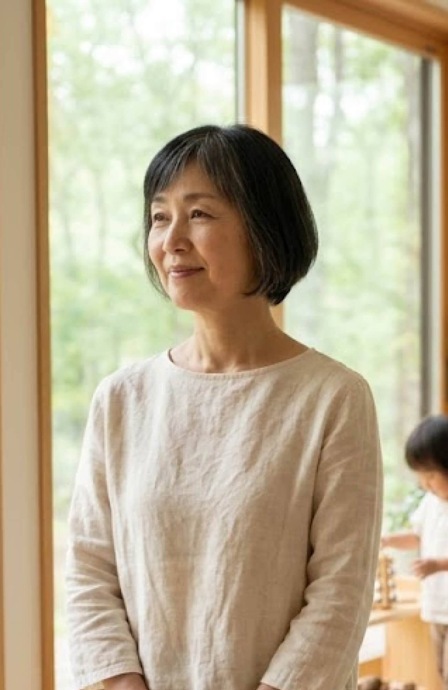

01
自然とあそぶ
森の道、畑、雨あがりの水たまり。季節ごとの発見を、遊びの入り口にします。
KOMOREBI NO MORI CHILDREN'S GARDEN
木漏れ日、土のにおい、風の音。
毎日の小さな発見を、未来につながる力に。
OUR PHILOSOPHY
こもれびの森こども園は、季節の移ろいをすぐそばに感じられる、小さな木の園です。土に触れ、草花を見つけ、友だちと笑う。五感で味わう豊かな毎日が、子どもたちの好奇心と、しなやかな心を育てます。
私たちの保育について
WHAT WE CHERISH
子どもたちが、自分らしい芽をのばしていけるように。

森の道、畑、雨あがりの水たまり。季節ごとの発見を、遊びの入り口にします。

育てて、つくって、いただく。旬の食材にふれ、食べることの喜びを分かち合います。

絵本、絵の具、音、からだ。心が動いた瞬間を、自分だけの方法で表現します。

専門性を持つ先生たちが、小さな気づきを丁寧に受けとめ、成長を見守ります。
A DAY IN THE GARDEN



森の中にいると、子どもたちはみんな小さな探検家。
プロの演奏家を招く音楽会や、みんなで作るおやつの日もあります。
OUR PEOPLE
子どもたちの「やってみたい」を大切に、保育士・幼稚園教諭をはじめとする専門スタッフがチームで寄り添います。
「あせらなくて大丈夫。自然の中で過ごす時間は、子どもたちの心に、ゆっくりと根を張っていきます。」園長 森下 かえで先生たちに会いにいく

INFORMATION & ACCESS
森の町 3-12